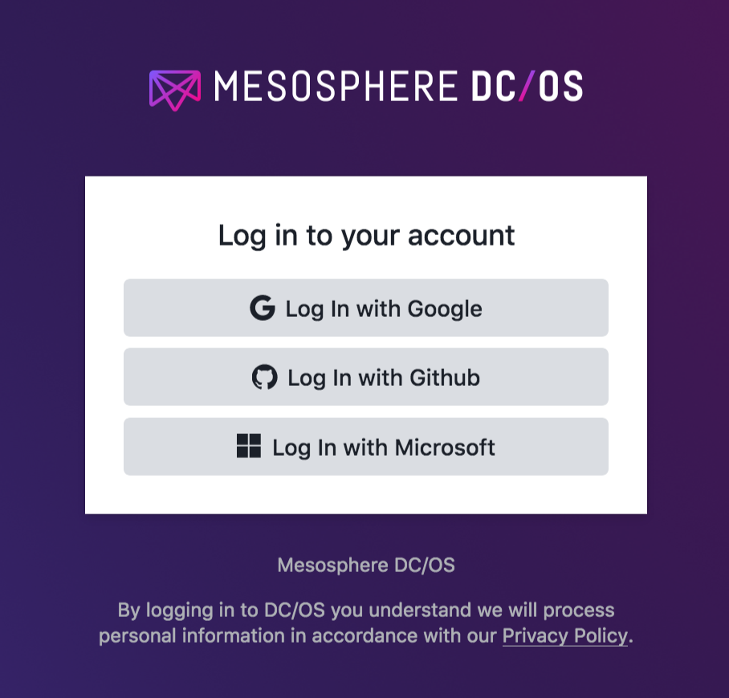
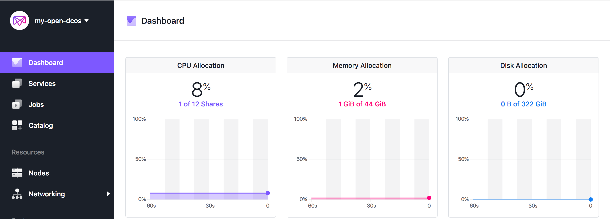
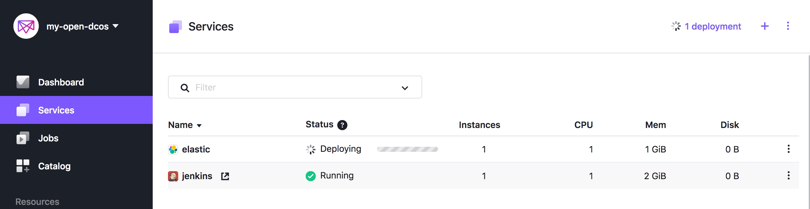

Install the Mesosphere DC/OS on AWS China Region
In this guide will walk you through step-by-step on how to: - Create an Open Source DC/OS Cluster on AWS in China Region, here I use the NingXia Region cn-northwest-1 as example - Destroy the cluster and all AWS resources associated with it
Hightlight
- Follow the official guide
- Update the IAM policy as China region format, such as
"Service": "ec2.amazonaws.com.cn" - Update the IBM policy ARN as China region format, such as
"Resource": "arn:aws-cn:s3" - By default instance type is
m4serial
Prerequisites
Terraform, AWS cloud credentials, SSH keys
Installing Terraform
- If you using MacOS as machine running deployment commands:
workspace ray$ brew install terraform
workspace ray$ terraform -v
Terraform v0.11.10
- If you using Linux as machine running deployment commands:
[ec2-user@ip-10-0-0-16 ~]$ curl -O https://releases.hashicorp.com/terraform/0.11.10/terraform_0.11.10_linux_amd64.zip
[ec2-user@ip-10-0-0-16 ~]$ sudo unzip terraform_0.11.10_linux_amd64.zip -d /usr/bin/
Archive: terraform_0.11.10_linux_amd64.zip
inflating: /usr/bin/terraform
[ec2-user@ip-10-0-0-16 ~]$ terraform -v
Terraform v0.11.10
Set the AWS Cloud Credentials and Default AWS Region
[ec2-user@ip-10-0-0-16 ~]$ export AWS_DEFAULT_REGION="cn-northwest-1"
[ec2-user@ip-10-0-0-16 ~]$ aws configure
AWS Access Key ID [None]: xxx
AWS Secret Access Key [None]: xxxx
Default region name [None]: cn-northwest-1
Default output format [None]: json
Add your SSH keys to your ssh agent
Add your ssh private key to ssh agent and record the public key location which will used in Terraform template. - You can using the existed key-pair in AWS cloud
[ec2-user@ip-10-0-0-16 ~]# eval `ssh-agent -s`
[ec2-user@ip-10-0-0-16 ~]# ssh-add ~/.ssh/my-key-pair-cn-northwest-1.pem
- You can also generate a new ssh key-pair, remember AWS cloud only accept the private key as
pemfile
[ec2-user@ip-10-0-0-16 ~]# ssh-keygen
[ec2-user@ip-10-0-0-16 .ssh]$ openssl rsa -in ~/.ssh/id_rsa -outform pem > id_rsa.pem
writing RSA key
[ec2-user@ip-10-0-0-16 .ssh]$ chmod 600 id_rsa.pem
[ec2-user@ip-10-0-0-16 ~]# eval `ssh-agent -s`
[ec2-user@ip-10-0-0-16 ~]# ssh-add ~/.ssh/id_rsa.pem
Enterprise Edition
DC/OS Enterprise Edition also requires a valid license key provided by Mesosphere that we will pass into our main.tf as dcos_license_key_contents
Creating a Cluster
Prepare the template
- Make a folder
[ec2-user@ip-10-0-0-16 ~]$ mkdir mesoswphere
[ec2-user@ip-10-0-0-16 ~]$ cd mesoswphere/
- Copy and paste the sample template below into a
main.tffile You can modify the parameter based on your environment requirement. The parameter guide can be found in Advanced DC/OS on AWS The sample in here create DC/OS cluster with - 1 Master
- 2 Private Agents
- 1 Public Agent
The output should be printed once cluster creation is complete: - master-ips - A list of Your DC/OS Master Nodes. - cluster-address - The URL you use to access DC/OS UI after the cluster is setup. - public-agent-loadbalancer - The URL of your Public routable services.
The sample main.tf
variable "dcos_install_mode" {
description = "specifies which type of command to execute. Options: install or upgrade"
default = "install"
}
# Used to determine your public IP for forwarding rules
data "http" "whatismyip" {
url = "http://whatismyip.akamai.com/"
}
module "dcos" {
source = "dcos-terraform/dcos/aws"
version = "~> 0.1"
dcos_instance_os = "coreos_1855.5.0"
cluster_name = "my-open-dcos"
ssh_public_key_file = "~/.ssh/id_rsa.pub"
admin_ips = ["${data.http.whatismyip.body}/32"]
num_masters = "1"
num_private_agents = "2"
num_public_agents = "1"
dcos_version = "1.11.4"
# dcos_variant = "ee"
# dcos_license_key_contents = "${file("./license.txt")}"
dcos_variant = "open"
dcos_install_mode = "${var.dcos_install_mode}"
}
output "masters-ips" {
value = "${module.dcos.masters-ips}"
}
output "cluster-address" {
value = "${module.dcos.masters-loadbalancer}"
}
output "public-agents-loadbalancer" {
value = "${module.dcos.public-agents-loadbalancer}"
}
- Initialize the DC/OS modules
[ec2-user@ip-10-0-0-16 ~]$ terraform init
Update module template for China Region
In this document using cn-northwest-1 and dcos_instance_os = "coreos_1855.5.0" as example
- Make sure you have add the coreos_1855.5.0_cn-northwest-1 = "THE-CHINA-REGION-AMI-ID" to variables.tf under dcos-terraform-terraform-aws-tested-oses module
You can locate the coreos_1855.5.0 AMI from
EC2 console, in this document, theCoreOS-stable-1855.5.0-hvm - ami-0deaa8ada18aec612will be used
[ec2-user@ip-10-0-0-16 mesoswphere]$ cd /home/ec2-user/mesoswphere/.terraform/modules/
[ec2-user@ip-10-0-0-16 modules]$ find . -name "variables.tf" | xargs grep coreos_1855.5.0_us-east-1
./d99c56292580257ac8db5932b7260aaf/dcos-terraform-terraform-aws-tested-oses-9d12bad/variables.tf: coreos_1855.5.0_us-east-1 = "ami-0bb5afc82c391abb7"
[ec2-user@ip-10-0-0-16 modules]$ vi ./d99c56292580257ac8db5932b7260aaf/dcos-terraform-terraform-aws-tested-oses-9d12bad/variables.tf
Append the coreos_1855.5.0_cn-northwest-1 = "ami-0deaa8ada18aec612" under coreos_1855.5.0 section
- Update the IAM policy as China region format
amazonaws.com.cn, such as"Service": "ec2.amazonaws.com.cn"
[ec2-user@ip-10-0-0-16 modules]$ find . -name "*.tf" | xargs grep ec2.amazonaws.com
./4a68d476add99f51b98409007be95061/dcos-terraform-terraform-aws-iam-732ca6f/main.tf: "Service": "ec2.amazonaws.com"
./4a68d476add99f51b98409007be95061/dcos-terraform-terraform-aws-iam-732ca6f/main.tf: "Service": "ec2.amazonaws.com"
- Update the IAM policy ARN as China region format
arn:aws-cn, such as"Resource": "arn:aws-cn:s3"
[ec2-user@ip-10-0-0-16 modules]$ find . -name "*.tf" | xargs grep arn:aws
From the result, You only need take care the generic ones as below
./4a68d476add99f51b98409007be95061/dcos-terraform-terraform-aws-iam-732ca6f/main.tf: "Resource": "arn:aws:s3:::soak-cluster-logs"
./4a68d476add99f51b98409007be95061/dcos-terraform-terraform-aws-iam-732ca6f/main.tf: "Resource": "arn:aws:s3:::soak-cluster-logs/*"
./4a68d476add99f51b98409007be95061/dcos-terraform-terraform-aws-iam-732ca6f/main.tf: "arn:aws:s3:::soak-cluster-elk-snapshots"
./4a68d476add99f51b98409007be95061/dcos-terraform-terraform-aws-iam-732ca6f/main.tf: "Resource": "arn:aws:s3:::soak-cluster-logs"
./4a68d476add99f51b98409007be95061/dcos-terraform-terraform-aws-iam-732ca6f/main.tf: "Resource": "arn:aws:s3:::soak-cluster-logs/*"
You can ignore the region specific ones as below
./4a68d476add99f51b98409007be95061/dcos-terraform-terraform-aws-iam-732ca6f/main.tf: "Resource": "arn:aws:es:us-east-1:159577368695:domain/scaletestlogsinkpublic/*"
./2ecdde255497635b26a84c7b5338c609/dcos-terraform-terraform-aws-elb-dcos-2d7af12/main.tf: * masters_acm_cert_arn = "arn:aws:acm:us-east-1:123456789123:certificate/ooc4NeiF-1234-5678-9abc-vei5Eeniipo4"
./106d3b437ebfb290731d195ab84a133e/dcos-terraform-terraform-aws-elb-masters-dac18f6/main.tf: * https_acm_cert_arn = "arn:aws:acm:us-east-1:123456789123:certificate/ooc4NeiF-1234-5678-9abc-vei5Eeniipo4"
./17bc9f957dca1163b437d35f1403173d/dcos-terraform-terraform-aws-elb-masters-internal-100d26a/main.tf: * https_acm_cert_arn = "arn:aws:acm:us-east-1:123456789123:certificate/ooc4NeiF-1234-5678-9abc-vei5Eeniipo4"
./9420f912eb883ccbdd0d561090abba84/dcos-terraform-terraform-aws-elb-public-agents-1226e52/main.tf: * https_acm_cert_arn = "arn:aws:acm:us-east-1:123456789123:certificate/ooc4NeiF-1234-5678-9abc-vei5Eeniipo4"
./05e95323a497107fa47ecd7198629b00/dcos-terraform-terraform-aws-elb-fb17756/main.tf: * aws_external_masters_acm_cert_arn = "arn:aws:acm:us-east-1:123456789123:certificate/ooc4NeiF-1234-5678-9abc-vei5Eeniipo4"
Run the execution plan
Execute terraform plan and save it to a static file - in this case, plan.out
terraform plan -out=plan.out
You will receive message as below to indicate the plan.out has been successfully generated.
Plan: 38 to add, 0 to change, 0 to destroy.
------------------------------------------------------------------------
This plan was saved to: plan.out
To perform exactly these actions, run the following command to apply:
terraform apply "plan.out"
Let Terraform to build/deploy the plan
terraform apply plan.out
If you have any problem, fix it and then generate the updated plan based on the terraform.tfstate to apply it again.
#terraform plan -out=plan_update.out -state=terraform.tfstate
#terraform apply "plan_update.out"
Once Terraform has completed applying our plan, you should see output similar to the following:
Apply complete! Resources: 3 added, 0 changed, 0 destroyed.
Outputs:
cluster-address = my-open-dcos-1551385834.cn-northwest-1.elb.amazonaws.com.cn
masters-ips = [
52.82.30.84
]
public-agents-loadbalancer = ext-my-open-dcos-1935366512.cn-northwest-1.elb.amazonaws.com.cn
Congratulations - you’ve successfully installed a DC/OS cluster on AWS!
Using your cluster
- Access the cluster from browser by using
masters-ipsorcluster-addressIf you can not access above DNS and IP. You should edit your security group, for example
Change
dcos-my-open-dcos-master-lb-firewall port 80/443 source to your_desktop_ip or 0.0.0.0/0
dcos-my-open-dcos-admin-firewall. port 80/443/22 source to your_desktop_ip or 0.0.0.0/0
Login 
- Check the DC/OS cluster from Dashboard and deploy a service for testing
In the service panel, click
Run a Serviceor you can launch service fromCatalogwith certified packages.
Dashboard 
Services 
Next step
You can follow up the guide to Scaling Your Cluster or Upgrading Your Cluster
Deleting Your Cluster
#terraform destroy
Or you can run
[ec2-user@ip-10-0-0-33 mesoswphere]$ terraform plan -destroy -out=plan_destory.out
...
Plan: 0 to add, 0 to change, 38 to destroy.
------------------------------------------------------------------------
This plan was saved to: plan_destory.out
To perform exactly these actions, run the following command to apply:
terraform apply "plan_destory.out"
[ec2-user@ip-10-0-0-33 mesoswphere]$ terraform apply "plan_destory.out"
...
Apply complete! Resources: 0 added, 0 changed, 38 destroyed.
Trouble Shooting
- Key pair related
module.dcos.module.dcos-infrastructure.module.dcos-master-instances.module.dcos-master-instances.null_resource.instance-prereq: timeout - last error: ssh: handshake failed: ssh: unable to authenticate, attempted methods [none publickey], no supported methods remain
Make sure your private key as pem file and add it to your ssh agent by ssh-add
openssl rsa -in ~/.ssh/id_rsa -outform pem > id_rsa.pem
writing RSA key
chmod 600 id_rsa.pem
ssh-add ~/.ssh/id_rsa.pem
- Lookup the aws_ami failed, this is caused by China Region identifies has not included in Terraform default module
module.dcos.module.dcos-infrastructure.module.dcos-publicagent-instances.module.dcos-public-agent-instances.module.dcos-tested-oses.data.template_file.aws_ami: 1 error(s) occurred:
module.dcos.module.dcos-infrastructure.module.dcos-publicagent-instances.module.dcos-public-agent-instances.module.dcos-tested-oses.data.template_file.aws_ami: lookup: lookup failed to find 'coreos_1855.5.0_cn-northwest-1' in:
Make sure you have add the coreos_1855.5.0_cn-northwest-1 = "THE-CHINA-REGION-AMI-ID" to variables.tf under dcos-terraform-terraform-aws-tested-oses module
cd /home/ec2-user/mesoswphere/.terraform/modules/
find . -name "variables.tf" | xargs grep coreos_1855.5.0_us-east-1
/home/ec2-user/mesoswphere/.terraform/modules/d99c56292580257ac8db5932b7260aaf/dcos-terraform-terraform-aws-tested-oses-9d12bad/variables.tf
Append coreos_1855.5.0_cn-northwest-1 = "THE-CHINA-REGION-AMI-ID" under coreos_1855.5.0 section